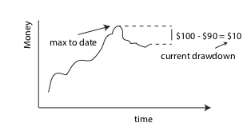

We consider the equilibrium drawdown distribution for a biased random walk — in the context of a repeated investment game, the drawdown at a given time is how much has been lost relative to the maximum capital held up to that time. We show that in the tail, this is exponential. Further, when mean drift is small, this has an exponent that is universal in form, depending only on the mean and standard deviation of the step distribution. We give simulation examples in python consistent with the results.
Introduction and main results
In this post, we consider a topic of high interest to investors and gamblers alike — the statistics of drawdown. This is the amount of money the investor has lost relative to their maximum held capital to date.  For example, if an investor once held \(100, but now holds only $90, his drawdown is currently $10. We will provide some results that characterize how unlikely it is for the investor to have a large drawdown of $\)k$, given knowledge of the statistics of his bets.
{kind=link}
We will take as our model system a biased random walk. The probability that at step \(t\) the investment goes from \(k^{\prime}\) to \(k\) will be taken to be independent of time and given by
We will assume that this has a positive bias \(\mu\), so that on average the investor makes money. With this assumption, we show below that for \(\vert k \vert\) more than a few step sizes, the drawdown distribution has an exponential form,
where the decay constant \(\alpha\) satisfies
The form (\ref{exponential}) holds for general distributions and (\ref{dd_decay_eqn}) provides the formula for obtaining \(\alpha\) in this case. However, in the limit where the mean drift \(\mu\) in \(\tau\) is small relative to its standard deviation, \(\sigma\), we show that the solution to (\ref{dd_decay_eqn}) has a universal form, giving
Because it is difficult to find very high drift investments, this simple form should hold for most real world investments (under the assumption of a Markov process). It can be used to give one a sense of how much time they can expect to sit at a particular drawdown, given estimates for \(\mu\) and \(\sigma\).
The results (\ref{exponential} - \ref{exponential_universal}) are the main results of this post. These may be new, but could also be well-known to finance theorists — we are not sure. We illustrate their accuracy in the following section using a numerical example, and provide derivations in an appendix.
Numerical examples in python
Here, we will consider two different kinds of random walk — one where the steps are always the same size, but there is bias in the forward direction, and the other where the steps are taken from a Gaussian or normal distribution. The code below carries out a simulated investing scenario over one million steps.
import numpy as np
def binary(mu):
"""
Return either mu - 1 or mu + 1 with equal probability.
Note unit std.
"""
return np.random.choice([-1, 1]) + mu
def normal_random_step(mu):
"""
Return a random unit normal with unit std.
"""
return np.random.randn() + mu
# CONSTANTS
TIME_STEPS = 10 ** 6
MU = 0.1
# BINARY WALK
position = 0
max_position_to_date = 0
drawdowns_binary = []
for time in range(TIME_STEPS):
position += STEP_FUNC(MU)
max_position_to_date = max(max_position_to_date, position)
drawdowns_binary.append(max_position_to_date - position)
# GAUSSIAN / NORMAL WALK
STEP_FUNC = normal_random_step
position = 0
max_position_to_date = 0
drawdowns_normal = []
for time in range(TIME_STEPS):
position += STEP_FUNC(MU)
max_position_to_date = max(max_position_to_date, position)
drawdowns_normal.append(max_position_to_date - position)

You can see in the code that we have a loop over steps. At each step, we append to a list of observed drawdown values. A plot of the histogram of these values for the Normal case at \(\mu = 0.1\) is shown at right.
To check whether our theoretical forms are accurate, it is useful to plot the cumulative distribution functions vs the theoretical forms — the latter will again be exponential with the same \(\alpha\) values as the probability distribution functions. It turns out that the exponent \(\alpha\) that solves (\ref{dd_decay_eqn}) is always given by the universal form for a Gaussian. However, for the binary walker, we need to solve for this numerically in general. The following code snippet does this.
from scipy.optimize import fsolve
# Solving numerically for binary case.
binary_alpha_func = lambda x: 1 - np.exp(x * MU) * np.cosh(x)
alpha_initial_guess = -4
alpha_solution = fsolve(binary_alpha_func, alpha_initial_guess)
A plot of the function above and the solution when \(\mu = 0.85\) is shown below. Note that there is always an unphysical solution at \(\alpha =0\) — this should be ignored.
{kind=link}
Using the above results, I have plotted the empirical cdfs versus \(k\) for both walk distributions. The values are shown below for \(\mu = 0.1\) (left) and \(\mu = 0.85\) (right). The slopes of the theoretical and numerical results are what should be compared as these give the value of \(\alpha\). Note that \(\mu = 0.1\) is a small drift relative to the standard deviation (\(\sigma = 1\), here), but \(\mu = 0.85\) is not. This is why at left the universal form gives us a good fit to the decay rates for both systems, but at right we need our numerical solution to (\ref{dd_decay_eqn}) to get the binary decay rate.

In conclusion, we have found that the exponential form of drawdown works quite well in these examples, with the theoretical results (\ref{exponential} - \ref{exponential_universal}) providing methods for identifying the exponents. In particular, the plot at left above illustrates the universality of form (\ref{exponential_universal}) — it holds for all walks, provided we are in the small bias limit.
Appendix: Derivations
To derive the exponential form, we consider an integral equation for the drawdown probability \(p\). At equilibrium, we have
where \(T\) is the transition function for the drawdown process. In the tail, we can ignore the boundary at zero and this goes to
where we have taken the upper limit to infinity, assuming that the transition function has a finite length so that this is acceptable. We can solve this by positing an exponential solution of form
Plugging this into the above gives
Simplifying this gives (\ref{exponential}).
Now, to get the universal form, we make use of the cumulant expansion, writing
Provided the expansion converges quickly, we obtain
giving
With this solution, the \(k\)-th term in the cumulant expansion goes like
assuming the the jumps are constrained over some length scale proportional to \(\sigma\). We see that provided the drift to standard deviation is small, the series converges quickly and our approximation is universally good. Unless you’re cursed with an unusually large drift ratio for a given move, this form should work well.
 Jonathan grew up in the midwest and then went to school at Caltech and UCLA. Following this, he did two postdocs, one at UCSB and one at UC Berkeley. His academic research focused primarily on applications of statistical mechanics, but his professional passion has always been in the mastering, development, and practical application of slick math methods/tools. He worked as a data-scientist at Square for four years and is now working on a quantitative investing startup.
Jonathan grew up in the midwest and then went to school at Caltech and UCLA. Following this, he did two postdocs, one at UCSB and one at UC Berkeley. His academic research focused primarily on applications of statistical mechanics, but his professional passion has always been in the mastering, development, and practical application of slick math methods/tools. He worked as a data-scientist at Square for four years and is now working on a quantitative investing startup.